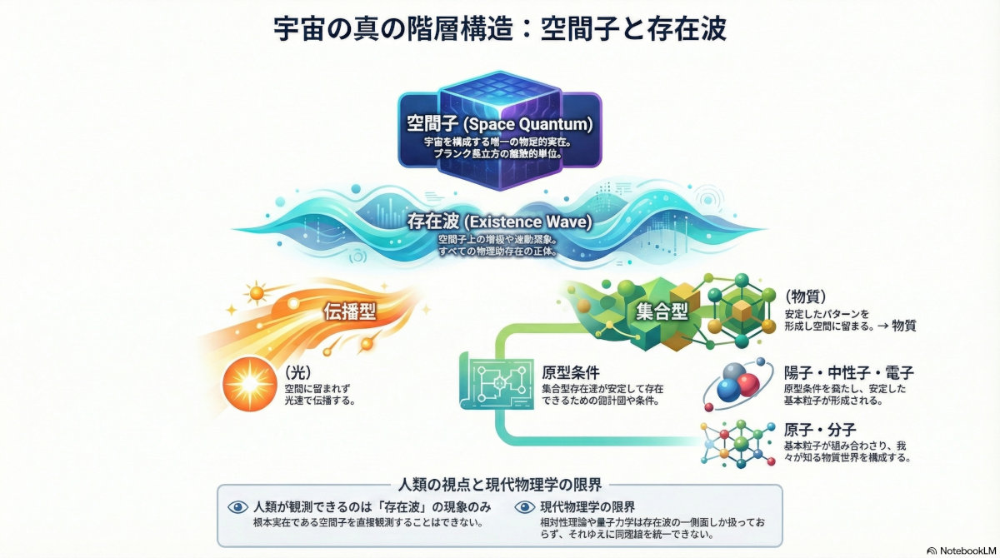
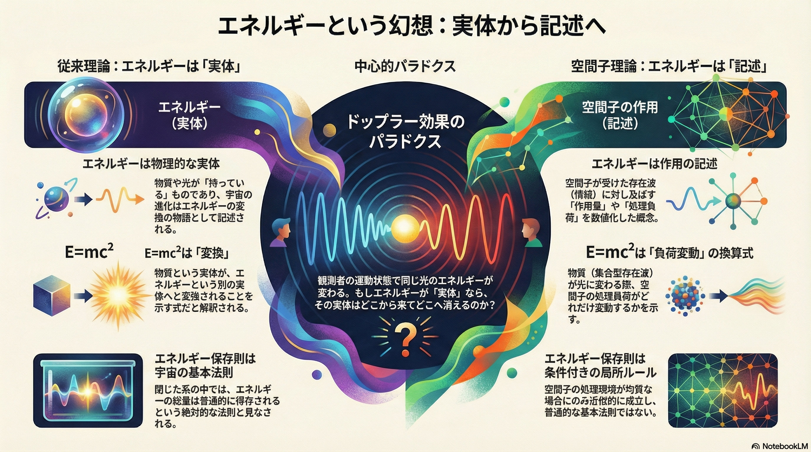
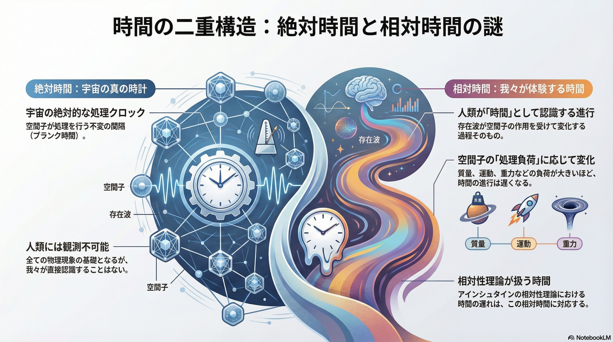
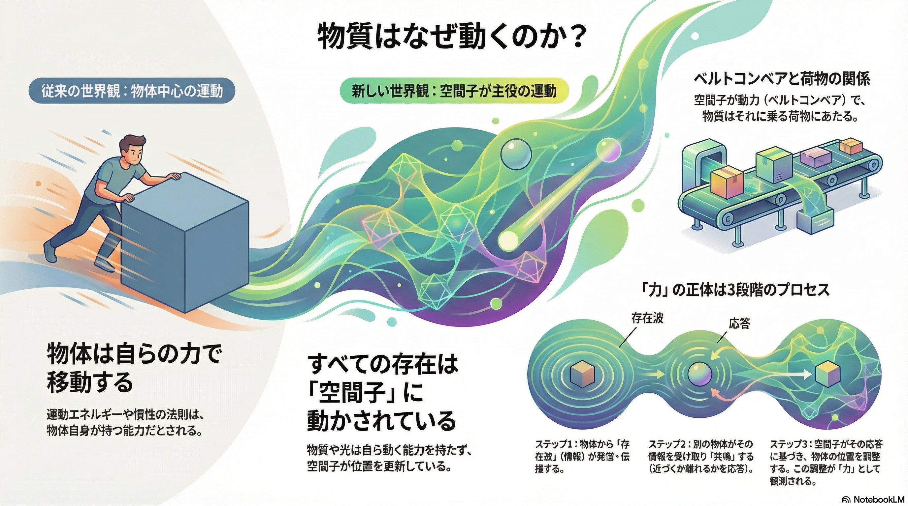
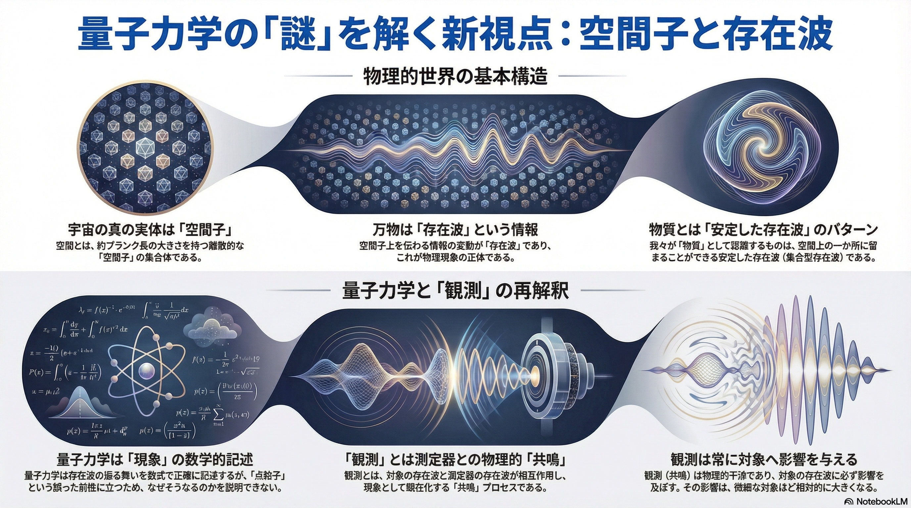
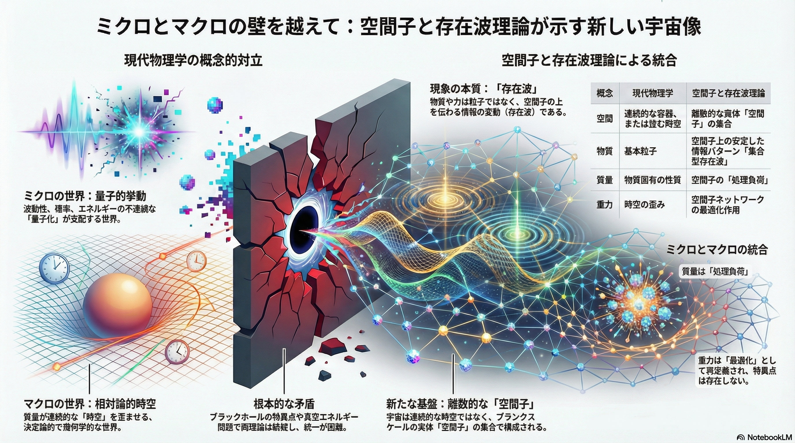

はじめに
空間子と存在波理論の核心概念を、6つのインフォグラフィックで視覚的に理解できます。各図は理論の異なる側面を説明しており、全体として統一的な物理描像を提供します。
これらの図は、現代物理学の「計算はできるが説明できない」という状況に対して、「なぜそうなるのか」という物理的メカニズムを明示することを目指しています。
図1：宇宙の真の階層構造

AI生成
説明
空間子を基盤とし、存在波、原型、素粒子、原子・分子へと至る階層構造を示します。この図は理論全体の概要を提供し、物理的実在の本質を明らかにします。
重要なのは、物理的実在は空間子のみであるという点です。我々が「物質」や「光」と呼ぶものは、すべて空間子上の情報変動（存在波）として理解されます。
重要なポイント：
- 空間子（Space Quantum）：プランク長立方（約10-35m）の空間を占有する唯一の物理的実在。情報を保持、伝達、処理する能力を持つ。
- 存在波（Existence Wave）：空間子上の情報変動。すべての物理現象の正体。伝播型（光、力）と集合型（物質）に分類される。
- 原型（Archetype）：集合型存在波が空間上に安定して留まるための特殊な条件。この条件を満たした存在波のみが「物質」として認識される。
- 観測の限界：人類が観測できるのは存在波の挙動のみ。根本実在である空間子を直接観測することはできない。
関連論文：第一論文（概念の全体像）
↑ トップへ戻る図2：エネルギーという幻想

AI生成
説明
エネルギーは物理的実体ではなく、空間子の作用を数値化した記述概念です。この認識は、物理学におけるエネルギー概念を根本から再考させます。
中央に示されたドップラー効果のパラドクスは決定的です。同じ光でも、観測者の運動状態によってエネルギーが異なって測定されます。もしエネルギーが実体なら、これは矛盾です。しかし、エネルギーを「空間子の作用の記述」として理解すれば、矛盾は消えます。
重要なポイント：
- 従来理論：エネルギーは物理的な実体であり、物質や光が「持っている」もの。E=mc²は実体間の変換を表す。
- 空間子理論：エネルギーは空間子が受けた存在波（情報）に対して出す「作用量」や「処理負荷」を数値化した概念。E=mc²は形態変化（集合型⇔伝播型）のコストを示す換算式。
- ドップラー効果：観測者の運動状態で同じ光のエネルギーが変わる。これはエネルギーが実体ではなく、観測者依存の記述であることの証拠。
- 保存則の再解釈：エネルギー保存則は宇宙の基本法則ではなく、空間子の処理環境が均質な場合にのみ成り立つ局所ルール。一般相対論で破れるのはこのため。
関連論文：
↑ トップへ戻る図3：時間の二重構造

AI生成
説明
時間には二つの層があります：空間子の処理クロック（絶対時間）と、我々が体験する時間（相対時間）。この二重構造により、特殊相対論と一般相対論の時間現象を統一的に説明できます。
左側の絶対時間は、空間子が存在波を処理する際の不変の間隔（プランク時間）です。これは宇宙の真の時計であり、人類には観測不可能です。右側の相対時間は、存在波が空間子の作用を受けて変化する過程そのものであり、これが我々が「時間」として認識するものです。
重要なポイント：
- 絶対時間：空間子が処理を行う最小時間単位（プランク時間 ≈ 5.4×10-44秒）。これは不変であり、宇宙の絶対的な処理クロック。
- 相対時間：人類が「時間」として認識する進行。存在波が空間子の作用を受けて変化する過程そのもの。
- 時間の遅れのメカニズム：空間子の「処理負荷」に応じて変化。質量、運動、重力などの負荷が大きいほど、存在波の進行（＝相対時間）は遅くなる。
- 統一的説明：従来は特殊相対論（運動による時間の遅れ）と一般相対論（重力による時間の遅れ）で異なる説明だったが、空間子理論では「処理負荷」という単一の概念で統一的に説明。
関連論文：
↑ トップへ戻る図4：物質はなぜ動くのか

AI生成
説明
物質は自ら動くのではなく、空間子によって動かされています。「力」とは、3段階のプロセスです：①物体からの「存在波」（情報）が発信される、②別の物体がその情報を受け取り「共鳴」する、③空間子がその応答に基づいて物体の位置を更新する。
従来の物理学では「力」が物体を動かすと考えますが、空間子理論では「力」は情報の伝達であり、実際の運動実行は空間子が担います。物質はベルトコンベアに乗る荷物のようなもので、ベルトコンベア（空間子）が動かしているのです。
重要なポイント：
- 従来の世界観：物体は自らの力（運動エネルギーや慣性の法則）で移動する。力は物体自身が持つ能力。
- 新しい世界観：すべての存在は「空間子」によって動かされている。物質や光は自ら動く能力を持たず、空間子が位置を更新している。
- 力の3段階プロセス：
- 情報の発信：物体Aから「存在波」（情報）が発信・伝播される
- 応答・共鳴：物体Bがその情報を受け取り、「共鳴」する（近づくか離れるかを応答）
- 実行：空間子がその応答に基づき、物体の位置を調整する。この調整が「力」として観測される。
- ベルトコンベアの比喩：空間子が動力（ベルトコンベア）で、物質はそれに乗る荷物。荷物自体は動く能力を持たない。
関連論文：
↑ トップへ戻る図5：量子力学の謎を解く

AI生成
説明
量子力学の「謎」の多くは、物質を固定された実体として扱うことから生じます。存在波として理解すれば、観測問題も波動性も粒子性も、自然に説明されます。
上段の図は、宇宙の真の実体は「空間子」であり、万物は「存在波」という情報であることを示します。我々が「物質」と呼ぶものは、安定したパターンを形成した存在波（集合型存在波）です。下段の図は、量子力学が「現象」の数学的記述であること、「観測」とは測定器の存在波との物理的共鳴であることを示します。
重要なポイント：
- 物質の正体：我々が「物質」と認識するものは、空間上に安定したパターンを形成した存在波（集合型存在波）である。
- 波動性の説明：存在波という情報が空間子を伝わる様子が「波動性」として観測される。
- 粒子性の説明：集合型存在波が原型条件を満たして空間上に留まる様子が「粒子性」として観測される。
- 観測問題の再解釈：「観測」とは、対象の存在波と測定器の存在波が相互作用し「共鳴」する物理的プロセス。観測は常に対象に影響を与えるため、「観測前の状態」は原理的に知り得ない。
- 量子力学の位置づけ：量子力学は存在波の挙動を数式で正確に記述するが、「なぜそうなるのか」を説明していない。空間子理論は、その背後にある物理的メカニズムを提供する。
関連論文：
↑ トップへ戻る図6：ミクロとマクロの統合

AI生成
説明
現代物理学は、ミクロの世界（量子力学）とマクロの世界（相対論）が概念的に分断されています。量子力学では「量子化」と「確率」が支配し、相対論では「時空の歪み」が支配します。これらは数学的には両立しますが、統一的な物理描像を欠いています。
空間子理論は、両者を「空間子」という離散的な実在と、その上を伝わる「存在波」という統一的概念で説明します。ミクロもマクロも、宇宙論も、すべて同じ原理から導かれます。
重要なポイント：
- 現代物理学の概念的対立：
- ミクロ：量子力学の不思議な「量子化」が支配
- マクロ：相対論的時空の「連続的な歪み」が支配
- 空間子理論による統合：
- 空間：連続的な時空ではなく、離散的な「空間子」の集合
- 物質：基本粒子ではなく、空間子上の安定した情報パターン「集合型存在波」
- 質量：物質固有の性質ではなく、空間子の「処理負荷」
- 重力：時空の歪みではなく、空間子ネットワークの「歪み化作用」
- 根本的な矛盾の解消：
- ブラックホールの特異点問題 → 特異点は物理的に存在せず、作用率0%の領域として理解される
- 真空エネルギー問題 → 真空概念の再定義により、120桁の乖離が説明される
- 統一的な宇宙像：離散的な空間子の集合として、ミクロからマクロ、宇宙論まで統一的に説明される。
関連論文：
↑ トップへ戻る図版のご利用について
各図は、個人的な学習目的であれば、右クリック → 画像を保存 でご利用いただけます。
学術発表、教育目的、出版物等での利用を希望される場合は、以下のクレジット表記をお願いいたします：
図版：須釜正行「空間子と存在波理論」
https://sugamamasayuki.github.io/SpaceQuanta-and-ExistenceWaves/
Generated by Google NotebookLMさらに詳しく学ぶ
これらのインフォグラフィックで興味を持たれた方は、ぜひ論文シリーズをご覧ください。10本の論文で、理論の詳細と数学的基盤を提供しています。